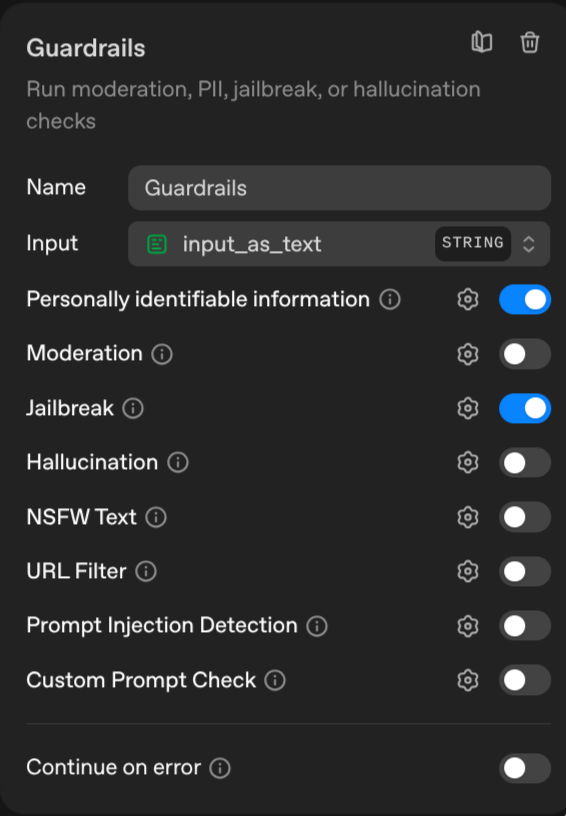
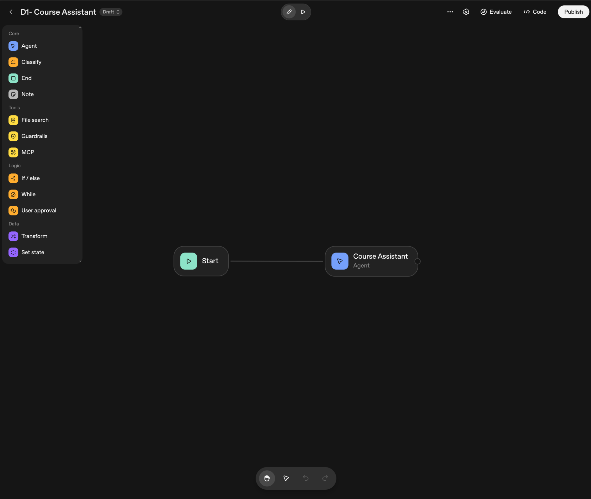
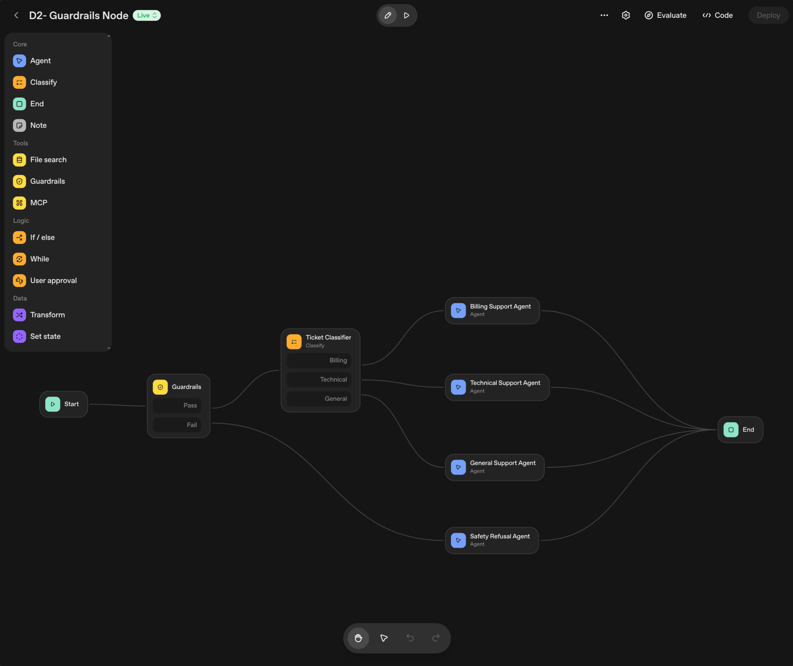
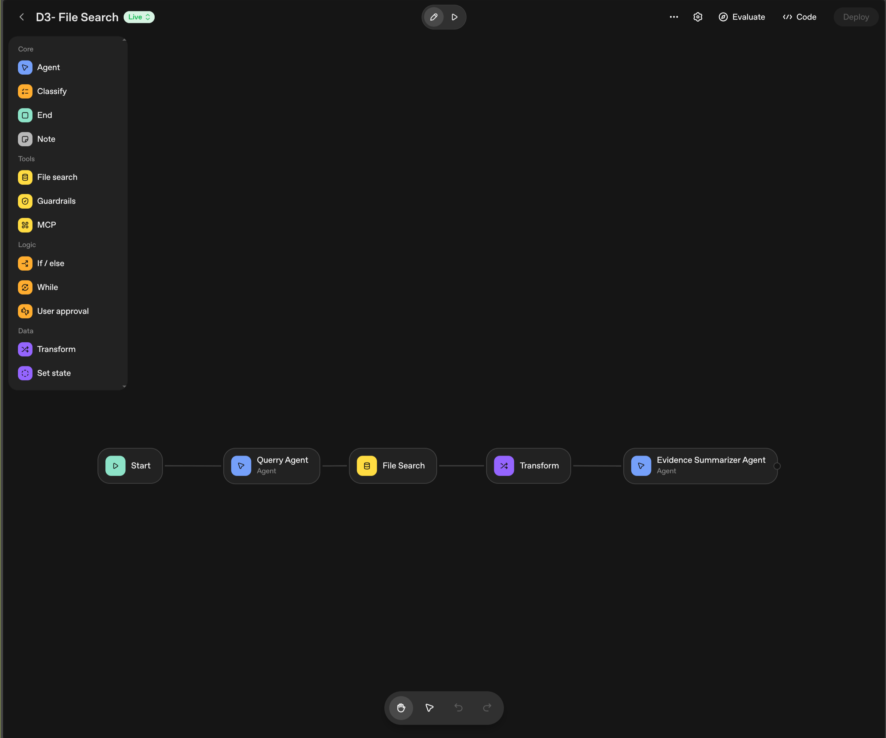

class: center, middle # Building Agents with OpenAI’s AgentKit and Responses API ## Lucas Soares O'Reilly Live Training --- # Table of Contents **1. The Problem: Why Layers Matter** -- **2. Layer 1: Responses API** — the primitive -- **3. Layer 2: Agents SDK** — the framework -- **4. Layer 3: AgentKit** — the product platform -- **5. Agent Builder** — visual workflow orchestration -- **6. When to Use Each Layer** --- class: center, middle # The Problem --- # Building Production Agents Is Hard An API call gets you started. But production requires much more: -- - **Orchestration** — chaining multiple LLM calls + tool executions -- - **Multi-agent routing** — delegating tasks to specialized agents -- - **Guardrails** — input/output validation, safety checks -- - **Observability** — tracing, debugging, cost monitoring -- - **User Interface** — a chat experience your users actually interact with -- <div style="background: #FEF8E6; border: 2px solid #000000; border-radius: 0px; padding: 16px; margin-top: 16px;"> <strong>OpenAI's answer:</strong> a layered stack — each layer builds on the previous one. </div> --- # The Three-Layer Stack <div style="display: flex; justify-content: center; align-items: center; gap: 16px; margin: 40px 0;"> <div style="background: #FBEAE7; border: 2px solid #000000; padding: 16px; border-radius: 0px; text-align: center; width: 140px;"> <div style="font-size: 1.8em; margin-bottom: 8px; color: #E86B5A;">1</div> <h4 style="margin: 8px 0; color: #000000; font-weight: 600;">Responses API</h4> <p style="font-size: 12px; color: #5C5750; margin: 0;">The Primitive<br>Direct API calls<br>Built-in tools & state</p> </div> <div style="font-size: 24px; color: #2A2825;">→</div> <div style="background: #FEF8E6; border: 2px solid #000000; padding: 16px; border-radius: 0px; text-align: center; width: 140px;"> <div style="font-size: 1.8em; margin-bottom: 8px; color: #F5C542;">2</div> <h4 style="margin: 8px 0; color: #000000; font-weight: 600;">Agents SDK</h4> <p style="font-size: 12px; color: #5C5750; margin: 0;">The Framework<br>Multi-agent orchestration<br>Guardrails & tracing</p> </div> <div style="font-size: 24px; color: #2A2825;">→</div> <div style="background: #EEF5EC; border: 2px solid #000000; padding: 16px; border-radius: 0px; text-align: center; width: 140px;"> <div style="font-size: 1.8em; margin-bottom: 8px; color: #7CB56B;">3</div> <h4 style="margin: 8px 0; color: #000000; font-weight: 600;">AgentKit</h4> <p style="font-size: 12px; color: #5C5750; margin: 0;">The Product Platform<br>Agent Builder + ChatKit<br>Connectors + Evals</p> </div> </div> -- <div style="text-align: center; margin-top: 8px; color: #5C5750; font-style: italic;"> Each layer builds on the previous — you pick the level of abstraction you need. </div> --- class: center, middle # Layer 1: Responses API ## The Primitive --- # Responses API — What & Why Released **March 2025**. Replaces both Chat Completions API and Assistants API. -- <div style="display: grid; grid-template-columns: 1fr 1fr; gap: 24px; margin: 24px 0;"> <div style="background: #E8F1F9; padding: 16px; border: 2px solid #000000; border-radius: 0px;"> <h4 style="margin-top: 0; color: #000000;">Key Innovations</h4> <ul style="font-size: 16px; color: #2A2825;"> <li><strong>Items-based I/O</strong> — polymorphic output (text, tool calls, reasoning)</li> <li><strong>Server-side state</strong> via <code>previous_response_id</code></li> <li><strong>Reasoning preservation</strong> across turns</li> </ul> </div> <div style="background: #EEF5EC; padding: 16px; border: 2px solid #000000; border-radius: 0px;"> <h4 style="margin-top: 0; color: #000000;">Built-in Tools</h4> <ul style="font-size: 16px; color: #2A2825;"> <li><code>web_search</code></li> <li><code>file_search</code></li> <li><code>code_interpreter</code></li> <li><code>computer_use</code></li> <li><code>mcp</code> (Model Context Protocol)</li> </ul> </div> </div> -- <div style="text-align: center; color: #5C5750; font-style: italic; margin-top: 8px;"> This is what we've been using in the notebooks so far. </div> <div style="position: absolute; bottom: 30px; width: 100%; left: 0; text-align: left;"> <p style="font-size: 14px; margin-bottom: 0px; margin-left: 36px;"> <sup>[1]</sup><a href="https://developers.openai.com/blog/responses-api/" style="color: #5C5750;">Why we built the Responses API</a> </p> </div> --- class: center, middle # Layer 2: Agents SDK ## The Framework --- # Agents SDK — Overview Open-source framework. **Python + TypeScript**. ```bash pip install openai-agents ``` -- ### The 5 Core Primitives <div style="display: flex; justify-content: center; align-items: center; gap: 16px; margin: 24px 0;"> <div style="background: #FBEAE7; border: 2px solid #000000; padding: 16px; border-radius: 0px; text-align: center; width: 140px;"> <div style="font-size: 1.8em; margin-bottom: 8px; color: #E86B5A;">1</div> <h4 style="margin: 8px 0; color: #000000; font-weight: 600;">Agents</h4> <p style="font-size: 12px; color: #5C5750; margin: 0;">LLM + tools<br>+ instructions</p> </div> <div style="font-size: 24px; color: #2A2825;">→</div> <div style="background: #FEF8E6; border: 2px solid #000000; padding: 16px; border-radius: 0px; text-align: center; width: 140px;"> <div style="font-size: 1.8em; margin-bottom: 8px; color: #F5C542;">2</div> <h4 style="margin: 8px 0; color: #000000; font-weight: 600;">Runner</h4> <p style="font-size: 12px; color: #5C5750; margin: 0;">Automated<br>agent loop</p> </div> <div style="font-size: 24px; color: #2A2825;">→</div> <div style="background: #EEF5EC; border: 2px solid #000000; padding: 16px; border-radius: 0px; text-align: center; width: 140px;"> <div style="font-size: 1.8em; margin-bottom: 8px; color: #7CB56B;">3</div> <h4 style="margin: 8px 0; color: #000000; font-weight: 600;">Handoffs</h4> <p style="font-size: 12px; color: #5C5750; margin: 0;">Multi-agent<br>delegation</p> </div> <div style="font-size: 24px; color: #2A2825;">→</div> <div style="background: #E8F1F9; border: 2px solid #000000; padding: 16px; border-radius: 0px; text-align: center; width: 140px;"> <div style="font-size: 1.8em; margin-bottom: 8px; color: #5B9BD5;">4</div> <h4 style="margin: 8px 0; color: #000000; font-weight: 600;">Guardrails</h4> <p style="font-size: 12px; color: #5C5750; margin: 0;">Parallel<br>validation</p> </div> <div style="font-size: 24px; color: #2A2825;">→</div> <div style="background: #FFFFFF; border: 2px solid #000000; padding: 16px; border-radius: 0px; text-align: center; width: 140px;"> <div style="font-size: 1.8em; margin-bottom: 8px; color: #2A2825;">5</div> <h4 style="margin: 8px 0; color: #000000; font-weight: 600;">Tracing</h4> <p style="font-size: 12px; color: #5C5750; margin: 0;">Built-in<br>observability</p> </div> </div> -- Works with **100+ LLMs** — not locked to OpenAI. <div style="position: absolute; bottom: 30px; width: 100%; left: 0; text-align: left;"> <p style="font-size: 14px; margin-bottom: 0px; margin-left: 36px;"> <sup>[1]</sup><a href="https://github.com/openai/openai-agents-python" style="color: #5C5750;">openai-agents-python (GitHub)</a><br> <sup>[2]</sup><a href="https://openai.github.io/openai-agents-python/" style="color: #5C5750;">Agents SDK Documentation</a> </p> </div> --- class: center, middle # Layer 3: AgentKit ## The Product Platform --- # AgentKit — The Full Platform Launched at **DevDay, October 2025**. No platform fee — standard API pricing. -- <div style="display: grid; grid-template-columns: 1fr 1fr; grid-template-rows: 1fr 1fr; gap: 16px; align-items: center; justify-items: center; width: 100%; min-height: 220px;"> <div style="background: #FFFFFF; border: 2px solid #000000; border-radius: 0px; box-shadow: 0 2px 8px rgba(0,0,0,0.08); padding: 8px 8px; text-align: center; width: 85%;"> <div style="font-size: 2em; margin-bottom: 4px;">🎨</div> <div style="font-size: 1em; font-weight: 600; margin-bottom: 4px;"> <span style="color: #000000;">Agent Builder</span> </div> <p style="font-size: 0.8em; color: #5C5750; margin-bottom: 0;">Visual drag-and-drop canvas for composing multi-agent workflows</p> </div> <div style="background: #F5F4F1; border: 2px solid #000000; border-radius: 0px; box-shadow: 0 2px 8px rgba(0,0,0,0.08); padding: 8px 8px; text-align: center; width: 85%;"> <div style="font-size: 2em; margin-bottom: 4px;">💬</div> <div style="font-size: 1em; font-weight: 600; margin-bottom: 4px;"> <span style="color: #000000;">ChatKit</span> </div> <p style="font-size: 0.8em; color: #5C5750; margin-bottom: 0;">Embeddable chat UI — React components + Web Component</p> </div> <div style="background: #F5F4F1; border: 2px solid #000000; border-radius: 0px; box-shadow: 0 2px 8px rgba(0,0,0,0.08); padding: 8px 8px; text-align: center; width: 85%;"> <div style="font-size: 2em; margin-bottom: 4px;">🔌</div> <div style="font-size: 1em; font-weight: 600; margin-bottom: 4px;"> <span style="color: #000000;">Connector Registry</span> </div> <p style="font-size: 0.8em; color: #5C5750; margin-bottom: 0;">Pre-built data connectors — Dropbox, Google Drive, SharePoint, MCP</p> </div> <div style="background: #FFFFFF; border: 2px solid #000000; border-radius: 0px; box-shadow: 0 2px 8px rgba(0,0,0,0.08); padding: 8px 8px; text-align: center; width: 85%;"> <div style="font-size: 2em; margin-bottom: 4px;">📊</div> <div style="font-size: 1em; font-weight: 600; margin-bottom: 4px;"> <span style="color: #000000;">Evals for Agents</span> </div> <p style="font-size: 0.8em; color: #5C5750; margin-bottom: 0;">Datasets, trace grading, automated prompt optimization</p> </div> </div> <div style="position: absolute; bottom: 30px; width: 100%; left: 0; text-align: left;"> <p style="font-size: 14px; margin-bottom: 0px; margin-left: 36px;"> <sup>[1]</sup><a href="https://openai.com/index/introducing-agentkit/" style="color: #5C5750;">Introducing AgentKit — OpenAI</a> </p> </div> --- class: center, middle # Agent Builder ## Visual Workflow Orchestration --- # Agent Builder — Deprecation Notice <div style="background: #FFF3CD; padding: 20px; border: 3px solid #856404; border-radius: 0px; margin: 24px 0;"> <h3 style="color: #856404; margin-top: 0;">⚠️ Agent Builder & Evals are being shut down</h3> <p style="color: #533F03; font-size: 17px; margin-bottom: 8px;">OpenAI will retire <strong>Agent Builder</strong> and <strong>Evals</strong> on <strong>November 30, 2026</strong>.</p> <p style="color: #533F03; font-size: 17px; margin-bottom: 0;">The demos in this module will not be reproducible after that date.</p> </div> <p style="font-size: 16px; color: #2A2825; margin-top: 24px;">The patterns you are learning — multi-agent orchestration, handoffs, guardrails, classifiers, and retrieval — are the <strong>fundamental building blocks</strong>. They are not tied to this UI. When the tooling changes, the thinking stays.</p> <p style="font-size: 12px; color: #5C5750; margin-top: 16px;">Source: <a href="https://community.openai.com/t/deprecation-notice-agent-builder/1382650" style="color: #5C5750;">community.openai.com/t/deprecation-notice-agent-builder/1382650</a></p> --- # Where the patterns live after November 2026 <div style="display: grid; grid-template-columns: 1fr 1fr; gap: 24px; margin: 24px 0;"> <div style="background: #E8F1F9; padding: 16px; border: 2px solid #000000; border-radius: 0px;"> <h4 style="margin-top: 0; color: #000000;">Agents SDK</h4> <p style="font-size: 15px; color: #2A2825;"><code>pip install openai-agents</code></p> <ul style="font-size: 15px; color: #2A2825;"> <li>Same patterns in Python code</li> <li>Handoffs, guardrails, file search as classes</li> <li>Full developer control, self-hosted</li> </ul> </div> <div style="background: #EEF5EC; padding: 16px; border: 2px solid #000000; border-radius: 0px;"> <h4 style="margin-top: 0; color: #000000;">Workspace Agents</h4> <p style="font-size: 15px; color: #2A2825;">ChatGPT Business / Enterprise</p> <ul style="font-size: 15px; color: #2A2825;"> <li>No-code, connects to Slack / Google Drive / Salesforce</li> <li>Internal team automation — not a developer API</li> </ul> </div> </div> <p style="font-size: 14px; color: #5C5750; margin-top: 8px;">Module rewrite targeting Agents SDK is planned for a future course revision.</p> --- # Agent Builder — What It Is A **visual drag-and-drop canvas** for composing multi-step agent workflows — no orchestration glue code required. -- <div style="display: grid; grid-template-columns: 1fr 1fr; gap: 24px; margin: 24px 0;"> <div style="background: #E8F1F9; padding: 16px; border: 2px solid #000000; border-radius: 0px;"> <h4 style="margin-top: 0; color: #000000;">Part of AgentKit</h4> <ul style="font-size: 15px; color: #2A2825;"> <li>Sits alongside <strong>ChatKit</strong>, <strong>Connector Registry</strong>, and <strong>Evals</strong></li> <li>Powered by the <strong>Responses API</strong> under the hood</li> <li>Standard API pricing — no platform fee</li> </ul> </div> <div style="background: #EEF5EC; padding: 16px; border: 2px solid #000000; border-radius: 0px;"> <h4 style="margin-top: 0; color: #000000;">What You Get</h4> <ul style="font-size: 15px; color: #2A2825;"> <li>Build multi-agent workflows visually</li> <li>Test interactively before deploying</li> <li>Publish and version with one click</li> <li>Connect to ChatKit or export as code</li> </ul> </div> </div> -- <div style="background: #FEF8E6; border: 2px solid #000000; border-radius: 0px; padding: 16px;"> <strong>Target users:</strong> developers who want visual orchestration <em>and</em> teams who need to ship quickly without writing agent loop code. </div> --- # Core Concepts — Workflows & Nodes <div style="display: grid; grid-template-columns: 1fr 1fr; gap: 24px; margin: 24px 0;"> <div style="background: #FBEAE7; padding: 20px; border: 2px solid #000000; border-radius: 0px;"> <h3 style="margin-top: 0; color: #E86B5A;">Workflow</h3> <p style="font-size: 15px; color: #2A2825;"><strong>The blueprint.</strong> The complete graph of nodes that defines how a request is processed.</p> <ul style="font-size: 14px; color: #2A2825;"> <li>Versioned and publishable</li> <li>Has a unique, stable ID</li> <li>The unit you build, test, and deploy</li> <li>Can be re-used across ChatKit, SDK, or API</li> </ul> </div> <div style="background: #E8F1F9; padding: 20px; border: 2px solid #000000; border-radius: 0px;"> <h3 style="margin-top: 0; color: #5B9BD5;">Node</h3> <p style="font-size: 15px; color: #2A2825;"><strong>The building block.</strong> Each node does exactly one thing.</p> <ul style="font-size: 14px; color: #2A2825;"> <li>Typed inputs and outputs</li> <li>Connections enforce data contracts</li> <li>Executes independently — traceable</li> <li>Chain nodes to compose complex behavior</li> </ul> </div> </div> -- <div style="text-align: center; color: #5C5750; font-style: italic; margin-top: 8px;"> A workflow is the graph. A node is the vertex. Edges carry typed data. </div> --- # Node Types <div style="display: grid; grid-template-columns: 1fr 1fr 1fr; gap: 12px; margin: 16px 0; font-size: 14px;"> <div style="background: #FBEAE7; border: 2px solid #000000; border-radius: 0px; padding: 10px;"> <strong>Start</strong><br><span style="color: #5C5750;">Entry point — accepts initial user input</span> </div> <div style="background: #EEF5EC; border: 2px solid #000000; border-radius: 0px; padding: 10px;"> <strong>Agent</strong><br><span style="color: #5C5750;">Calls an LLM with instructions + tools</span> </div> <div style="background: #E8F1F9; border: 2px solid #000000; border-radius: 0px; padding: 10px;"> <strong>Classifier</strong><br><span style="color: #5C5750;">Routes to one of N branches based on output category</span> </div> <div style="background: #FEF8E6; border: 2px solid #000000; border-radius: 0px; padding: 10px;"> <strong>If / Else</strong><br><span style="color: #5C5750;">Conditional logic on data values</span> </div> <div style="background: #EEF5EC; border: 2px solid #000000; border-radius: 0px; padding: 10px;"> <strong>File Search</strong><br><span style="color: #5C5750;">Vector search over uploaded documents (RAG)</span> </div> <div style="background: #E8F1F9; border: 2px solid #000000; border-radius: 0px; padding: 10px;"> <strong>Transform</strong><br><span style="color: #5C5750;">Maps data between incompatible node outputs/inputs</span> </div> <div style="background: #FBEAE7; border: 2px solid #000000; border-radius: 0px; padding: 10px;"> <strong>MCP</strong><br><span style="color: #5C5750;">Calls a hosted MCP server tool (third-party data/actions)</span> </div> <div style="background: #FEF8E6; border: 2px solid #000000; border-radius: 0px; padding: 10px;"> <strong>Guardrails</strong><br><span style="color: #5C5750;">Input/output safety validation before/after agents</span> </div> <div style="background: #FFFFFF; border: 2px solid #000000; border-radius: 0px; padding: 10px;"> <strong>End</strong><br><span style="color: #5C5750;">Returns final output to the caller</span> </div> </div> -- <div style="background: #FEF8E6; border: 2px solid #000000; border-radius: 0px; padding: 12px; font-size: 14px;"> <strong>Typed connections</strong> — each node declares its output schema; the canvas enforces that downstream nodes receive what they expect. </div> --- # Templates vs Blank Canvas <div style="display: grid; grid-template-columns: 1fr 1fr; gap: 24px; margin: 24px 0;"> <div style="background: #EEF5EC; padding: 20px; border: 2px solid #000000; border-radius: 0px;"> <h3 style="margin-top: 0; color: #000000;">Start from a Template</h3> <p style="font-size: 14px; color: #2A2825;"><strong>Best when:</strong> your use case fits a known pattern</p> <ul style="font-size: 14px; color: #2A2825;"> <li>Support triage with routing</li> <li>Document Q&A (RAG)</li> <li>Research assistant</li> <li>Multi-step approval workflow</li> </ul> <p style="font-size: 13px; color: #5C5750; margin-bottom: 0;">Pre-wired nodes — modify instructions, swap models, go.</p> </div> <div style="background: #E8F1F9; padding: 20px; border: 2px solid #000000; border-radius: 0px;"> <h3 style="margin-top: 0; color: #000000;">Start Blank</h3> <p style="font-size: 14px; color: #2A2825;"><strong>Best when:</strong> designing something novel</p> <ul style="font-size: 14px; color: #2A2825;"> <li>Custom multi-agent topology</li> <li>Unique data transformation pipeline</li> <li>Experimental classifier routing</li> <li>Prototyping from first principles</li> </ul> <p style="font-size: 13px; color: #5C5750; margin-bottom: 0;">Add nodes one by one — full control over the graph.</p> </div> </div> --- # Preview & Testing Agent Builder has a built-in interactive test panel — no deploy step required. -- <div style="display: grid; grid-template-columns: 1fr 1fr 1fr; gap: 16px; margin: 24px 0;"> <div style="background: #E8F1F9; border: 2px solid #000000; border-radius: 0px; padding: 14px; text-align: center;"> <div style="font-size: 1.8em; margin-bottom: 6px;">▶</div> <strong style="font-size: 14px;">Interactive Runs</strong> <p style="font-size: 12px; color: #5C5750; margin: 4px 0 0;">Send test inputs and see full output in real time</p> </div> <div style="background: #EEF5EC; border: 2px solid #000000; border-radius: 0px; padding: 14px; text-align: center;"> <div style="font-size: 1.8em; margin-bottom: 6px;">📎</div> <strong style="font-size: 14px;">File Attachments</strong> <p style="font-size: 12px; color: #5C5750; margin: 4px 0 0;">Attach PDFs and documents for File Search workflows</p> </div> <div style="background: #FEF8E6; border: 2px solid #000000; border-radius: 0px; padding: 14px; text-align: center;"> <div style="font-size: 1.8em; margin-bottom: 6px;">🔎</div> <strong style="font-size: 14px;">Per-Node Traces</strong> <p style="font-size: 12px; color: #5C5750; margin: 4px 0 0;">Inspect what each node received and returned</p> </div> </div> -- <div style="background: #EEF5EC; border: 2px solid #000000; border-radius: 0px; padding: 14px; font-size: 14px;"> <strong>Demo 1 (Course Assistant)</strong> — the simplest test case: Start → Agent → End. Per-node trace shows exactly what the agent saw and returned. </div> --- # Guardrails — Open-Source Safety Layer A **modular, open-source safety layer** that runs before and after your agents — no changes to agent logic required. -- <div style="display: grid; grid-template-columns: 1fr 1fr; gap: 24px; margin: 16px 0;"> <div style="background: #FBEAE7; padding: 16px; border: 2px solid #000000; border-radius: 0px;"> <h4 style="margin-top: 0; color: #000000;">What It Protects Against</h4> <ul style="font-size: 14px; color: #2A2825;"> <li>PII detection — Block or Redact mode</li> <li>Jailbreak attempts</li> <li>Prompt injection attacks</li> <li>Off-topic requests</li> <li>Sensitive data leakage in responses</li> </ul> </div> <div style="text-align: center; padding: 8px; display: flex; align-items: center; justify-content: center;"> <p></p> </div> </div> -- <div style="background: #FEF8E6; border: 2px solid #000000; border-radius: 0px; padding: 12px; font-size: 14px;"> <strong>Demo 2 (Support Triage)</strong> — Guardrails node gates every request before the Classifier. PII set to Block mode; jailbreak detection enabled. </div> --- # MCP Integration **MCP nodes** connect your workflow to hosted third-party tools via the Model Context Protocol. -- <div style="display: grid; grid-template-columns: 1fr 1fr; gap: 24px; margin: 16px 0;"> <div style="background: #E8F1F9; padding: 16px; border: 2px solid #000000; border-radius: 0px;"> <h4 style="margin-top: 0; color: #000000;">How It Works</h4> <ul style="font-size: 14px; color: #2A2825;"> <li>Add an MCP node to any workflow</li> <li>Pick a server from the Connector Registry</li> <li>The agent gains access to that tool set</li> <li>Examples: Slack, GitHub, Google Drive, custom APIs</li> </ul> </div> <div style="background: #FBEAE7; padding: 16px; border: 2px solid #000000; border-radius: 0px;"> <h4 style="margin-top: 0; color: #000000;">⚠ Context-Window Cost</h4> <p style="font-size: 14px; color: #2A2825;">Each MCP tool you add expands the model's context window with tool definitions.</p> <p style="font-size: 14px; color: #2A2825;"><strong>Stack wisely:</strong> more tools = higher latency & cost per call.</p> </div> </div> -- <div style="background: #EEF5EC; border: 2px solid #000000; border-radius: 0px; padding: 12px; font-size: 14px;"> <strong>Demo 3 (File Search RAG)</strong> uses the built-in File Search node — same composition pattern as MCP, but backed by a vector store instead of an external API. </div> --- # Widget Studio Go beyond plain text — render **rich, structured outputs** directly from agent responses. -- <div style="display: grid; grid-template-columns: 1fr 1fr 1fr; gap: 16px; margin: 24px 0;"> <div style="background: #E8F1F9; border: 2px solid #000000; border-radius: 0px; padding: 14px; text-align: center;"> <div style="font-size: 1.6em; margin-bottom: 6px;">📊</div> <strong style="font-size: 14px;">Tables & Cards</strong> <p style="font-size: 12px; color: #5C5750; margin: 4px 0 0;">Structured data rendered for review</p> </div> <div style="background: #EEF5EC; border: 2px solid #000000; border-radius: 0px; padding: 14px; text-align: center;"> <div style="font-size: 1.6em; margin-bottom: 6px;">📋</div> <strong style="font-size: 14px;">Forms</strong> <p style="font-size: 12px; color: #5C5750; margin: 4px 0 0;">Approval and input UIs from agent output</p> </div> <div style="background: #FEF8E6; border: 2px solid #000000; border-radius: 0px; padding: 14px; text-align: center;"> <div style="font-size: 1.6em; margin-bottom: 6px;">👁</div> <strong style="font-size: 14px;">Custom Layouts</strong> <p style="font-size: 12px; color: #5C5750; margin: 4px 0 0;">Enterprise dashboards, data review UIs</p> </div> </div> -- <div style="background: #FBEAE7; border: 2px solid #000000; border-radius: 0px; padding: 14px; font-size: 14px;"> Widget Studio is configured in the workflow — the agent outputs structured JSON; Widget Studio renders it as a component in ChatKit. </div> --- # Versioning & Publishing Workflows are **first-class versioned objects** — not just scripts you save and overwrite. -- <div style="display: grid; grid-template-columns: 1fr 1fr; gap: 24px; margin: 24px 0;"> <div style="background: #EEF5EC; padding: 16px; border: 2px solid #000000; border-radius: 0px;"> <h4 style="margin-top: 0; color: #000000;">Each Version Has</h4> <ul style="font-size: 14px; color: #2A2825;"> <li>A unique, stable workflow ID</li> <li>A published deployment URL / API endpoint</li> <li>An immutable snapshot of the graph</li> </ul> </div> <div style="background: #E8F1F9; padding: 16px; border: 2px solid #000000; border-radius: 0px;"> <h4 style="margin-top: 0; color: #000000;">Workflow Lifecycle</h4> <ul style="font-size: 14px; color: #2A2825;"> <li>Prior versions remain accessible</li> <li>Safe rollbacks with no downtime</li> <li>Staged promotion (dev → staging → prod)</li> <li>Point ChatKit at a specific version ID</li> </ul> </div> </div> --- # Deployment Paths Once your workflow is published, two paths to ship it: -- <div style="display: grid; grid-template-columns: 1fr 1fr; gap: 24px; margin: 24px 0;"> <div style="background: #EEF5EC; padding: 20px; border: 2px solid #000000; border-radius: 0px;"> <h3 style="margin-top: 0; color: #000000;">💬 ChatKit <span style="font-size: 14px; color: #5C5750; font-weight: 400;">(recommended default)</span></h3> <ul style="font-size: 14px; color: #2A2825;"> <li>Embed a chat UI in minutes</li> <li>Handles auth, streaming, file upload</li> <li>No backend agent loop code needed</li> <li>Point at a workflow ID — done</li> </ul> </div> <div style="background: #E8F1F9; padding: 20px; border: 2px solid #000000; border-radius: 0px;"> <h3 style="margin-top: 0; color: #000000;">💻 SDK Code Export</h3> <ul style="font-size: 14px; color: #2A2825;"> <li>Export as Python or TypeScript</li> <li>Full server-side orchestration control</li> <li>Custom approval flows & state management</li> <li>Tool execution hooks & multi-runtime</li> </ul> </div> </div> -- <div style="background: #FEF8E6; border: 2px solid #000000; border-radius: 0px; padding: 12px; font-size: 14px;"> Start with ChatKit. Export to SDK only when you need capabilities the hosted path can't provide. </div> --- # Evals Integration Evals closes the loop between building and improving your workflow. -- <div style="display: flex; justify-content: center; align-items: center; gap: 0; margin: 20px 0;"> <div style="background: #FBEAE7; border: 2px solid #000000; border-radius: 0px; padding: 12px 16px; text-align: center; width: 110px;"> <div style="font-size: 1.4em;">🏗</div> <strong style="font-size: 13px;">Build</strong> </div> <div style="font-size: 20px; color: #2A2825; padding: 0 4px;">→</div> <div style="background: #FEF8E6; border: 2px solid #000000; border-radius: 0px; padding: 12px 16px; text-align: center; width: 110px;"> <div style="font-size: 1.4em;">▶</div> <strong style="font-size: 13px;">Test</strong> </div> <div style="font-size: 20px; color: #2A2825; padding: 0 4px;">→</div> <div style="background: #EEF5EC; border: 2px solid #000000; border-radius: 0px; padding: 12px 16px; text-align: center; width: 110px;"> <div style="font-size: 1.4em;">🚀</div> <strong style="font-size: 13px;">Deploy</strong> </div> <div style="font-size: 20px; color: #2A2825; padding: 0 4px;">→</div> <div style="background: #E8F1F9; border: 2px solid #000000; border-radius: 0px; padding: 12px 16px; text-align: center; width: 110px;"> <div style="font-size: 1.4em;">📈</div> <strong style="font-size: 13px;">Measure</strong> </div> <div style="font-size: 20px; color: #2A2825; padding: 0 4px;">→</div> <div style="background: #FBEAE7; border: 2px solid #000000; border-radius: 0px; padding: 12px 16px; text-align: center; width: 110px;"> <div style="font-size: 1.4em;">⚙</div> <strong style="font-size: 13px;">Improve</strong> </div> </div> -- <div style="display: grid; grid-template-columns: 1fr 1fr 1fr; gap: 12px; margin: 8px 0; font-size: 13px;"> <div style="background: #F5F3EB; border: 2px solid #000000; border-radius: 0px; padding: 10px;"> <strong>Trace Grading</strong><br>Did the agent produce the right output on real conversations? </div> <div style="background: #F5F3EB; border: 2px solid #000000; border-radius: 0px; padding: 10px;"> <strong>Datasets</strong><br>Build eval sets from live runs — no manual labeling required </div> <div style="background: #F5F3EB; border: 2px solid #000000; border-radius: 0px; padding: 10px;"> <strong>Prompt Optimization</strong><br>Iterate system instructions using eval scores as signal </div> </div> --- # Agent Builder vs Agents SDK <div style="display: grid; grid-template-columns: 1fr 1fr; gap: 16px; margin: 24px 0; font-size: 14px;"> <div style="background: #EEF5EC; border: 2px solid #000000; border-radius: 0px; padding: 16px;"> <h4 style="margin-top: 0; color: #000000;">Reach for Agent Builder when…</h4> <ul style="color: #2A2825; line-height: 1.8;"> <li>Visual builder for non-dev teammates</li> <li>Shipping to ChatKit is the goal</li> <li>A template is close to your use case</li> <li>You want Evals + iteration in the UI</li> <li>Prototyping and testing workflows fast</li> </ul> </div> <div style="background: #E8F1F9; border: 2px solid #000000; border-radius: 0px; padding: 16px;"> <h4 style="margin-top: 0; color: #000000;">Reach for Agents SDK when…</h4> <ul style="color: #2A2825; line-height: 1.8;"> <li>Server-side orchestration & custom state</li> <li>Custom human-in-the-loop approval flows</li> <li>Fine-grained tool execution control</li> <li>Multi-runtime or non-OpenAI deployment</li> <li>Full code ownership is a requirement</li> </ul> </div> </div> -- <div style="background: #FEF8E6; border: 2px solid #000000; border-radius: 0px; padding: 12px; font-size: 14px;"> These paths are <strong>not mutually exclusive</strong> — prototype in Agent Builder, export to SDK for production hardening. </div> --- class: center, middle <h1> <span style="background-color: #7CB56B; color: #FFFFFF; padding: 8px 16px;"> Demo: Module 3 — Agent Builder Use Cases </span> </h1> --- # Demo 1 — Course Assistant **Simplest workflow:** Start → Agent → End <div style="display: grid; grid-template-columns: 1fr 1fr; gap: 24px; margin: 16px 0; align-items: start;"> <div> <p></p> </div> <div style="background: #EEF5EC; padding: 16px; border: 2px solid #000000; border-radius: 0px;"> <h4 style="margin-top: 0;">What It Demonstrates</h4> <ul style="font-size: 14px; color: #2A2825;"> <li>Minimal node composition — one Agent node</li> <li>How to set system instructions on a node</li> <li>Per-node trace inspection in preview mode</li> <li>Good starter template for any assistant</li> </ul> <p style="font-size: 13px; color: #5C5750; margin-bottom: 0;">Model: gpt-4o-mini with chat history enabled</p> </div> </div> --- # Demo 2 — Support Triage with Guardrails **Multi-agent routing + safety:** Guardrails → Classifier → 3 specialists (or Safety Refusal) <div style="display: grid; grid-template-columns: 1fr 1fr; gap: 24px; margin: 16px 0; align-items: start;"> <div> <p></p> </div> <div style="background: #FBEAE7; padding: 16px; border: 2px solid #000000; border-radius: 0px;"> <h4 style="margin-top: 0;">What It Demonstrates</h4> <ul style="font-size: 14px; color: #2A2825;"> <li>Guardrails node: PII block mode + jailbreak detection</li> <li>Classifier routing to Billing / Technical / General</li> <li>Safety Refusal Agent for policy violations</li> <li>Confidence-based routing prevents unsafe paths</li> </ul> </div> </div> --- # Demo 3 — File Search RAG (SEC 10-K Filings) **Grounded answers from documents:** Start → Query Agent → File Search → Transform → Evidence Summarizer <div style="display: grid; grid-template-columns: 1fr 1fr; gap: 24px; margin: 16px 0; align-items: start;"> <div> <p></p> </div> <div style="background: #E8F1F9; padding: 16px; border: 2px solid #000000; border-radius: 0px;"> <h4 style="margin-top: 0;">What It Demonstrates</h4> <ul style="font-size: 14px; color: #2A2825;"> <li>File Search node over 10 SEC 10-K filings</li> <li>Transform node: bridges typed output mismatch</li> <li>Evidence Summarizer with cited sources</li> <li>Vector store with real financial documents</li> </ul> <p style="font-size: 13px; color: #5C5750; margin-bottom: 0;">Query: "What does NVIDIA say about AI data centers and supply chain risks?"</p> </div> </div> --- # ChatKit — Embeddable Chat UI **Frontend-only** — React components + framework-agnostic Web Component. -- ```jsx import { ChatKit, useChatKit } from '@openai/chatkit-react'; const chatkit = useChatKit({ api: { getClientSecret }, ..... return <ChatKit control={chatkit.control} />; ``` -- <div style="background: #E8F1F9; border: 2px solid #000000; border-radius: 0px; padding: 16px;"> <strong>Includes:</strong> file upload, light/dark theming, tool invocation display, chain-of-thought visualization, suggestion chips, event system, and more. </div> <div style="position: absolute; bottom: 30px; width: 100%; left: 0; text-align: left;"> <p style="font-size: 14px; margin-bottom: 0px; margin-left: 36px;"> <sup>[1]</sup><a href="https://platform.openai.com/docs/guides/chatkit" style="color: #5C5750;">ChatKit — OpenAI Docs</a><br> <sup>[2]</sup><a href="https://github.com/openai/chatkit-js" style="color: #5C5750;">chatkit-js (GitHub)</a> </p> </div> --- # ChatKit — Backend Token Exchange ```typescript // POST /api/create-session (your backend) const response = await fetch( "https://api.openai.com/v1/chatkit/sessions", { method: "POST", headers: { .... ); const { client_secret } = await response.json(); // Return client_secret to the frontend ``` -- <div style="background: #FBEAE7; border: 2px solid #000000; border-radius: 0px; padding: 16px;"> <strong>Key pattern:</strong> Your server-side API key is exchanged for a short-lived client token. Per-user sessions via cookies. The frontend <em>never</em> sees your API key. </div> --- class: center, middle <h1> <span style="background-color: #7CB56B; color: #FFFFFF; padding: 8px 16px;"> Demo: ChatKit App </span> </h1> --- # When to Use Each Layer <div style="display: grid; grid-template-columns: 1fr 1fr; gap: 24px; margin: 24px 0;"> <div style="background: #E8F1F9; padding: 16px; border: 2px solid #000000; border-radius: 0px;"> <h4 style="margin-top: 0; color: #000000;">Direct API Control</h4> <ul style="font-size: 16px; color: #2A2825;"> <li><strong>Responses API</strong> — direct calls, full control, learning</li> </ul> </div> <div style="background: #EEF5EC; padding: 16px; border: 2px solid #000000; border-radius: 0px;"> <h4 style="margin-top: 0; color: #000000;">Multi-Agent Systems</h4> <ul style="font-size: 16px; color: #2A2825;"> <li><strong>Agents SDK</strong> — orchestration, custom logic, guardrails</li> </ul> </div> </div> <div style="display: grid; grid-template-columns: 1fr 1fr; gap: 24px; margin: 0;"> <div style="background: #FEF8E6; padding: 16px; border: 2px solid #000000; border-radius: 0px;"> <h4 style="margin-top: 0; color: #000000;">Ship a Chat UI</h4> <ul style="font-size: 16px; color: #2A2825;"> <li><strong>ChatKit</strong> — embed a chat experience fast</li> </ul> </div> <div style="background: #FBEAE7; padding: 16px; border: 2px solid #000000; border-radius: 0px;"> <h4 style="margin-top: 0; color: #000000;">Visual Workflows & Evals</h4> <ul style="font-size: 16px; color: #2A2825;"> <li><strong>Agent Builder</strong> — drag-and-drop, non-dev teams</li> <li><strong>Evals</strong> — measure and improve agent quality</li> </ul> </div> </div> --- # Key Takeaways -- - **Start with Responses API** for maximum control and the deepest learning -- - **Add Agents SDK** when you need multi-agent orchestration, guardrails, tracing -- - **Use AgentKit / ChatKit** when you're ready to ship to real users -- - Each layer **builds on the previous** — no vendor lock-in at the SDK level -- - The whole stack is available at **standard API pricing** — no platform fee --- # What We Built From notebooks to full-stack agent apps across three modules: -- - **Paper Chat App** — interactive Q&A on uploaded PDFs (Module 1) -- - **Video Script Generator** — paper → 60-second video script with DALL-E scenes (Module 1) -- - **Research Report App** — structured analysis exported as Markdown (Module 1) -- - **3 Agent Builder Workflows** — Course Assistant, Support Triage, File Search RAG (Module 3) -- <div style="background: #EEF5EC; border: 2px solid #000000; border-radius: 0px; padding: 16px; margin-top: 16px;"> <strong>The patterns you learn here apply at every layer of the stack.</strong> </div> --- # Q&A & References <ul style="font-size: 15px; line-height: 2.2; padding-left: 24px;"> <li> <a href="https://developers.openai.com/blog/responses-api/">Why we built the Responses API</a> — OpenAI Blog </li> <li> <a href="https://platform.openai.com/docs/api-reference/responses">Responses API Reference</a> — OpenAI Docs </li> <li> <a href="https://github.com/openai/openai-agents-python">openai-agents-python</a> — GitHub </li> <li> <a href="https://openai.github.io/openai-agents-python/">Agents SDK Documentation</a> — OpenAI </li> <li> <a href="https://openai.com/index/introducing-agentkit/">Introducing AgentKit</a> — OpenAI </li> <li> <a href="https://platform.openai.com/docs/guides/chatkit">ChatKit Guide</a> — OpenAI Docs </li> <li> <a href="https://github.com/openai/chatkit-js">chatkit-js</a> — GitHub </li> <li> <a href="https://platform.openai.com/docs/guides/agent-builder">Agent Builder Guide</a> — OpenAI Docs </li> <li> <a href="https://github.com/openai/openai-agents-python/tree/main/src/agents/guardrails">Guardrails (open-source)</a> — GitHub </li> </ul> -- <div style="margin-top: 24px; text-align: center;"> <p style="color: #5C5750; font-style: italic;"> Questions before we move on? </p> </div> --- ??? Presenter notes: - Wrap up the conceptual overview - Transition to hands-on notebooks - Next up: Paper data extraction with structured outputs